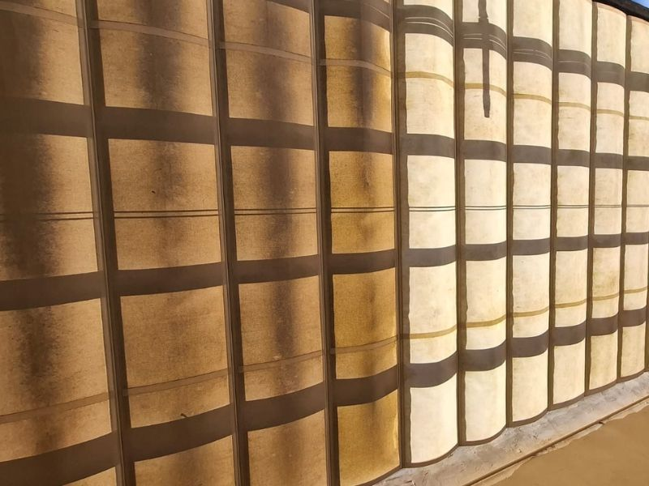
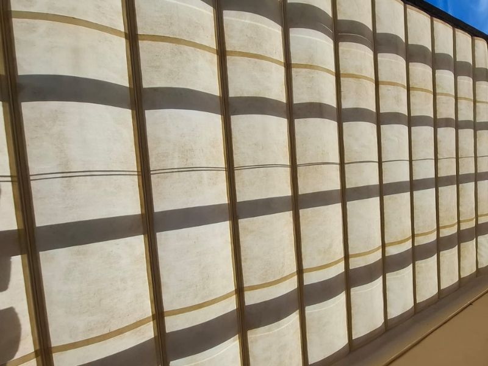
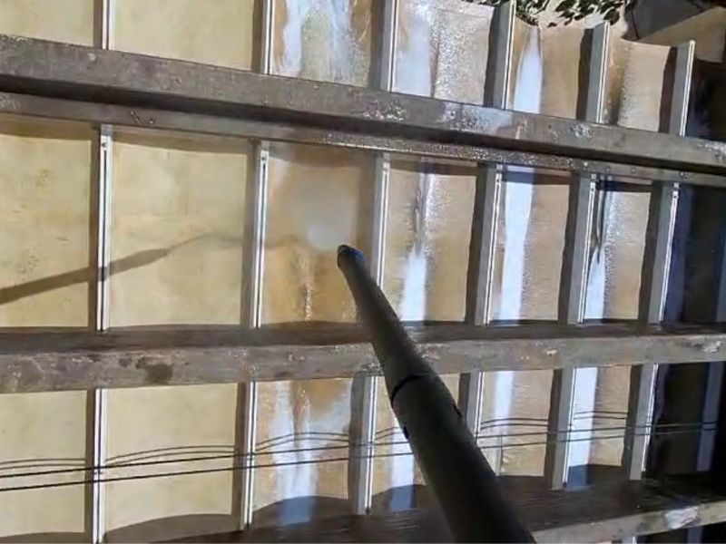
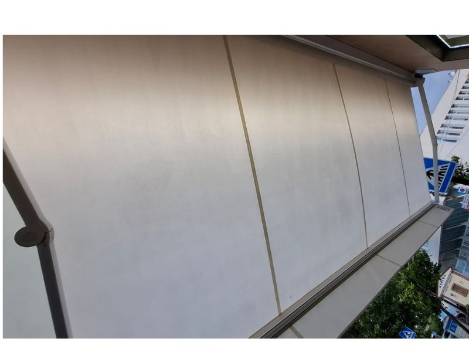

Limpieza profesional de Toldos
Cuidamos toldos, terrazas y tejidos exteriores afectados por polvo, humedad, salitre y suciedad ambiental. Servicio ideal para viviendas, negocios, terrazas y propiedades cerca del mar.
Resultados reales
Cada toldo se evalúa según el tejido, el nivel de suciedad, la altura y el acceso.




Qué incluye la limpieza de toldos
Qué limpiamos
- Toldos exteriores de tela y acrílicos
- Toldos de terraza y balcón
- Sombrillas grandes para terrazas y negocios
- Tejidos exteriores con polvo, humedad y suciedad ambiental
- Manchas visibles y suciedad acumulada
Resultados
- Toldo más limpio, fresco y cuidado
- Eliminación de suciedad ambiental y salitre
- Ayuda a prevenir moho y malos olores
- Productos adaptados al tipo de tejido
- Ideal para zonas con brisa marina
Antes de pedir
- Envía 2–3 fotos por WhatsApp
- Indica ciudad y código postal
- Menciona altura / número de plantas
- Indica si el acceso es fácil o en altura
Zonas disponibles
- Marbella
- Estepona
- San Pedro de Alcántara
- Benahavís y alrededores bajo consulta
Cómo trabajamos
Evaluamos tejido, suciedad, humedad, altura y acceso.
Aplicamos productos profesionales adaptados al material.
Limpiamos cuidadosamente el tejido y retiramos suciedad acumulada.
Precios orientativos
El precio final depende del tamaño, estado del toldo, altura y acceso.
Toldo pequeño o estándar
Toldo grande o terraza amplia
Varios toldos, negocios o acceso en altura
Preguntas frecuentes
¿Se puede limpiar cualquier toldo?
Depende del estado del tejido. Si el toldo es muy antiguo o está dañado, revisamos fotos antes para evitar riesgos.
¿Necesitan acceso al agua?
Sí, normalmente necesitamos un punto de agua o confirmar previamente las condiciones de acceso.
¿Trabajan en altura?
Depende de la altura y seguridad del acceso. Por eso pedimos fotos antes de confirmar el presupuesto.
¿El toldo queda como nuevo?
La limpieza mejora mucho el aspecto, pero el resultado depende de la edad del tejido, manchas antiguas, sol, moho y desgaste.
¿Quieres renovar el aspecto de tu toldo?
Envíanos fotos por WhatsApp y te confirmamos precio aproximado y disponibilidad.
Enviar fotos por WhatsApp